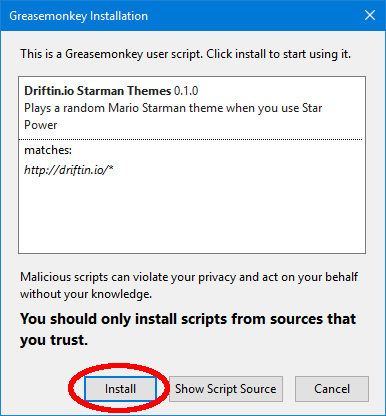

Please select your browser

Chrome
Firefox

Opera
This script will play the Starman theme from a random Mario game every time you use Star Power as the Star class in driftin.io
The song plays at full volume while Star Power is active (about 2 seconds) and fades out until your next Star Power is ready (8 seconds total).
Chrome

Firefox
Install the Greasemonkey add-on.
 Greasemonkey Add-On
Greasemonkey Add-On
The Greasemonkey icon should appear in your Firefox toolbar.
Install the script with Greasemonkey.
This adds the Starman themes to driftin.io
Greasemonkey Script
Click the Install button on the page that appears.
